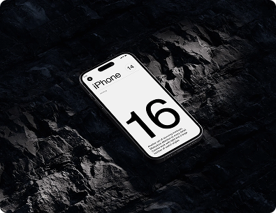
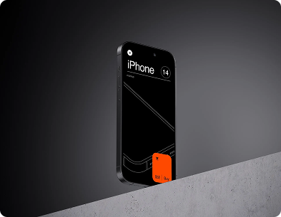
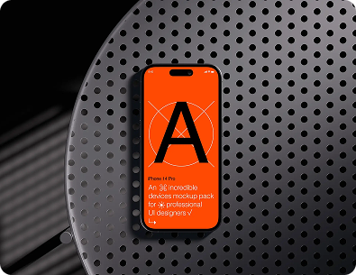
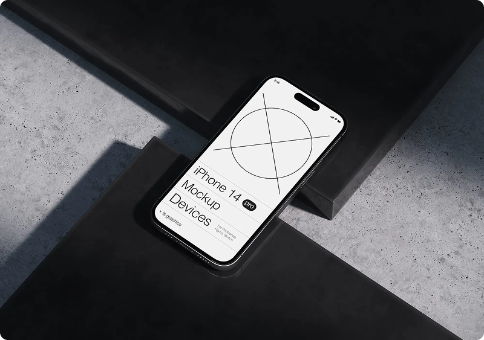

Internship project: social dining app design
Designing a mobile app to connect food enthusiasts through shared dining experiences, from concept to prototype.
Stage 1. Market research and analysis
- Initiated the project with comprehensive market research, analyzing competitors and identifying gaps in the social dining app market. Conducted surveys and focus groups with potential users to understand their needs, preferences, and pain points regarding dining out and socializing.
- Synthesized research findings to develop a clear value proposition for the app, focusing on unique features such as group dining options, personalized restaurant recommendations, and event planning capabilities.
Stage 2. Concept development and user flow design
- Led the conceptualization phase, brainstorming with the design team to generate innovative ideas that align with user needs and project goals. Developed user personas and scenarios to guide the design process and ensure a user-centered approach.
- Mapped out user flows for key app functionalities, including account creation, restaurant browsing, event creation, and social interactions. Prioritized simplicity and intuitiveness in the navigation structure to enhance user engagement.
Stage 3. UI design and prototyping
- Created detailed wireframes and interactive prototypes using Adobe XD, focusing on crafting an inviting and user-friendly interface. Selected a warm and inviting color scheme and typography that reflects the app's social and culinary focus.
- Developed high-fidelity prototypes that showcased the app's core features, including a dynamic home feed, detailed restaurant profiles, and an integrated chat system for planning dining events. Conducted iterative design reviews with the team to refine the prototypes.

Stage 4. User testing and iteration
- Organized user testing sessions with a diverse group of participants to gather feedback on the app's usability and appeal. Utilized both in-person and remote testing methods to collect a wide range of insights.
- Analyzed feedback to identify usability issues and areas for improvement. Implemented design iterations to address user concerns, enhance the app's functionality, and improve the overall user experience.
Stage 5. Final presentation and handoff
- Compiled and presented a comprehensive project report to the internship team and stakeholders, detailing the design process, user testing findings, and final app design. The presentation highlighted the app's potential to foster social connections through shared dining experiences.
- Prepared and delivered design specifications and assets to the development team, ensuring a smooth handoff and providing support during the initial stages of app development.



Reflections
This project was an invaluable opportunity to apply UX/UI design principles in a real-world setting, contributing to a product that promotes social connectivity and culinary exploration. It challenged me to think creatively about how to meet user needs and preferences, enhancing my skills in research, design, and collaboration. The experience underscored the importance of user feedback in the design process and the impact of thoughtful design on user engagement and satisfaction.